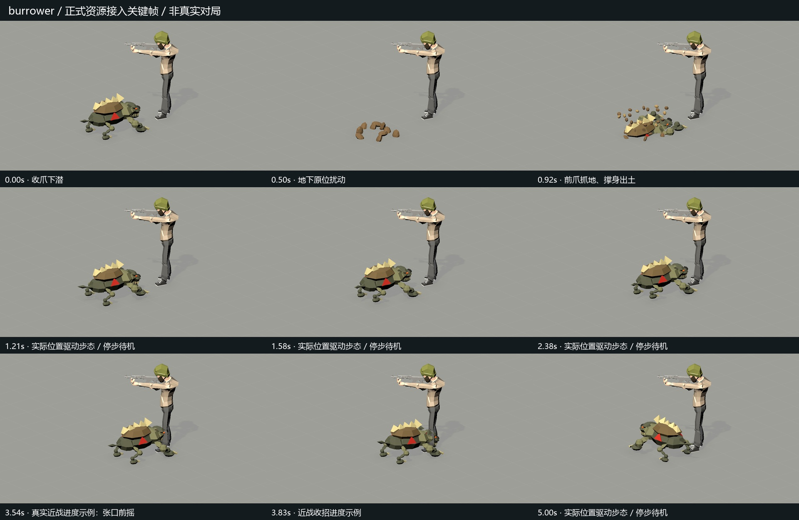
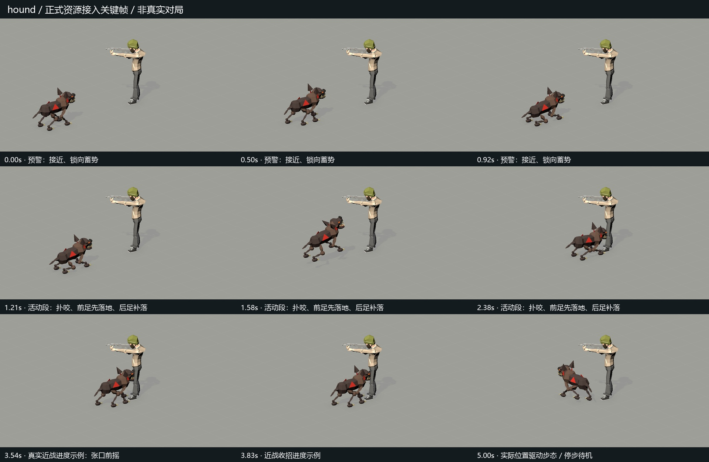

潜地怪与恶犬 · 正式接入回放
采用版网格、材质和动画已进入正式Prefab，并从单人/联机共用的正式Controller按只读状态采样。正式主角保持原尺寸。这里是隔离场景手动快照回放，位置、近战剩余量由捕获工具安排；不是自然对局、实际AI追击或真人双端验收。为看清动作隐藏了环境与头顶HUD，技能仍沿用原配置7.5秒周期和1.2秒预警。
潜地怪
0.5× 慢放与关键帧

恶犬
0.5× 慢放与关键帧

采用姿态对照误差 · 四条视频完整解码 · 验证及交接说明